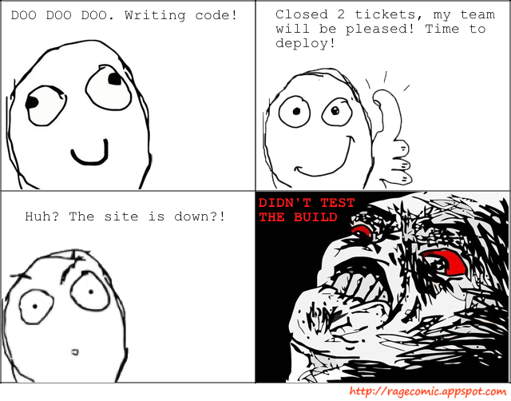
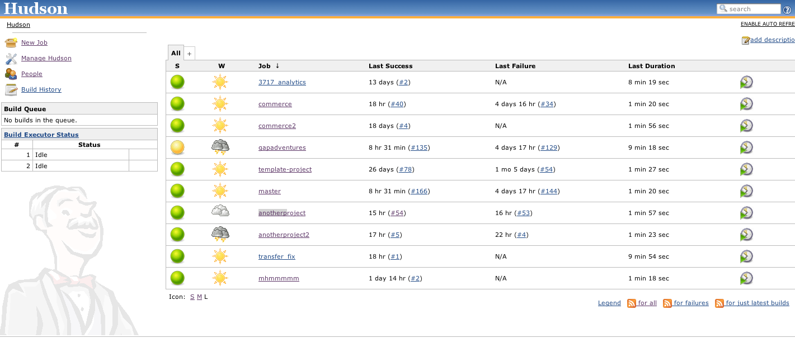
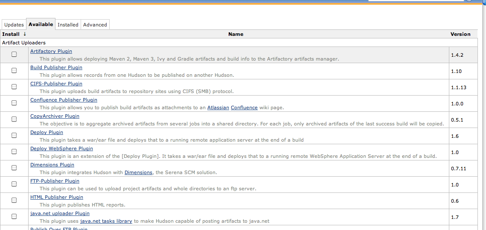
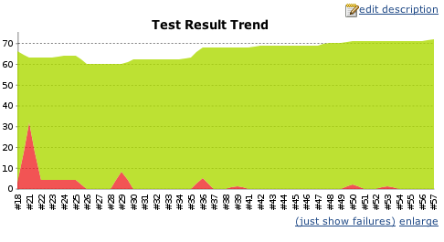
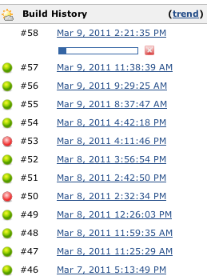
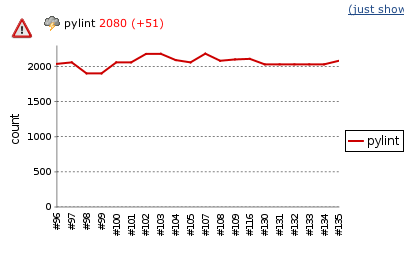

Continuous Integration with
What?
- http://jenkins-ci.org/
- automated building and testing of your code
- continous quality control
- Other software: Buildbot, Apache Gump, etc.
Why?
- promote test driven development
- reduce surprises, find bugs quick
- frequent deployment

Jenkins is easy to start using
wget http://mirrors.jenkins-ci.org/war/
latest/jenkins.war
java -jar jenkins.warIt's also on apt and other distro package managers
Easy to use web interface

Plugins, Plugins, Plugins!

Running your first build
- Create a new job
- Connect to your repository
- Add build instructions (steps)
- Build
- ???
- Profit
Demo Break!
5 Minutes, I promise
Oh man, please don't break.
Building a Django Project
- Activate a virtualenv
- Install requirements
- Symlink test settings (e.g. sqlite database override)
- Migrations
- Run django-jenkins
A Jenkins Build Script for a Django Project
#!/bin/bash -ex
cd $WORKSPACE
virtualenv -q ve
source ./ve/bin/activate
pip install -E ./ve -r requirements.txt
pip install -E ./ve -r requirements-testing.txt
cd $WORKSPACE/projectname
ln -fs `pwd`/conf/testsettings.py `pwd`/localsettings.py
python manage.py migrate
python manage.py jenkinsAutomate builds with hooks
The most basic hook
wget http://jenkins/job/myproj/build?delay=0sec
>/dev/null 2>/dev/nullMore ideas:
- Dynamically create jobs
- Run jobs for specific branch
- Return feedback in console
Useful data and visualizations all over
  
Where else can Jenkins go?
- Automated deployment
- Code coverage, pylint, and other code analysis
- RobotJenkins yells at you when builds break
- Explore the plugins!
And now, Python developers can almost use this excuse.

Resources
- https://github.com/kmmbvnr/django-jenkins
- http://martinfowler.com/articles/continuousIntegration.html
- http://www.unlimitednovelty.com/2010/10/how-to-make-cheap-ci-traffic-light.html
- http://mtrichardson.com/2010/02/setting-hudson-ubuntu-910-apache-django-virtualenv-etc/
- http://www.rhonabwy.com/wp/2009/11/04/setting-up-a-python-ci-server-with-hudson/
- http://www.caktusgroup.com/blog/2010/03/08/django-and-hudson-ci-day-1/
Questions?
With answers, hopefully.